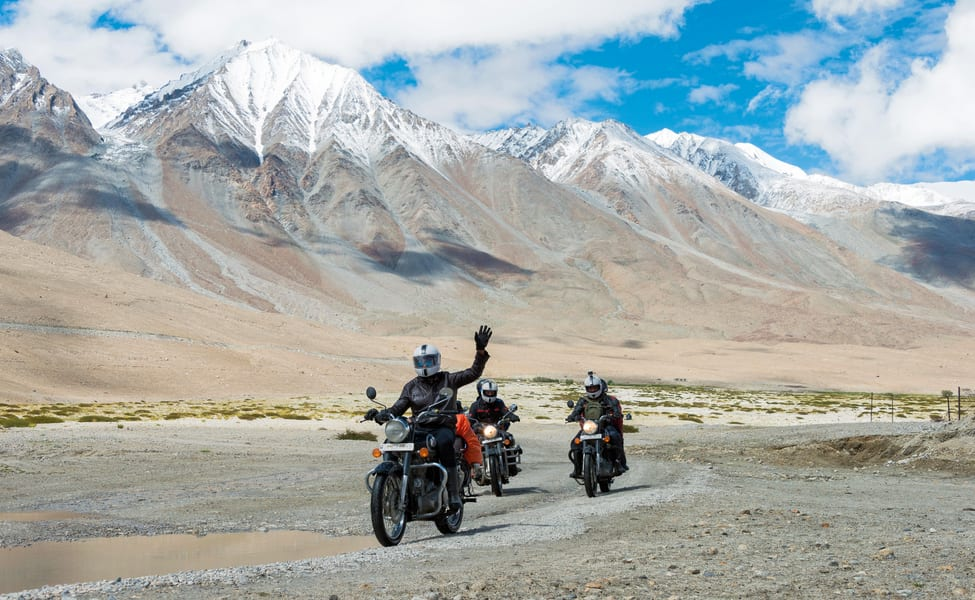
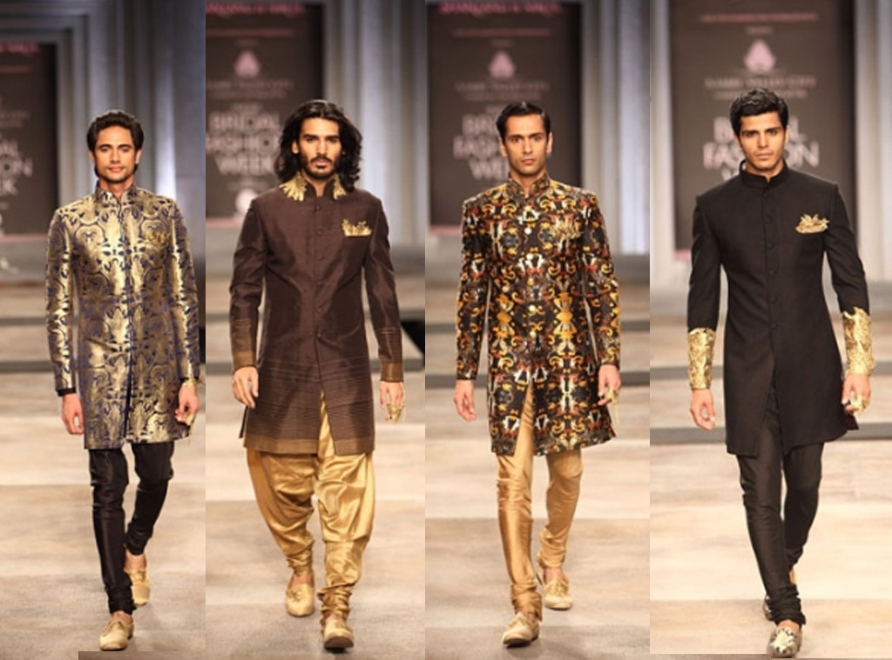
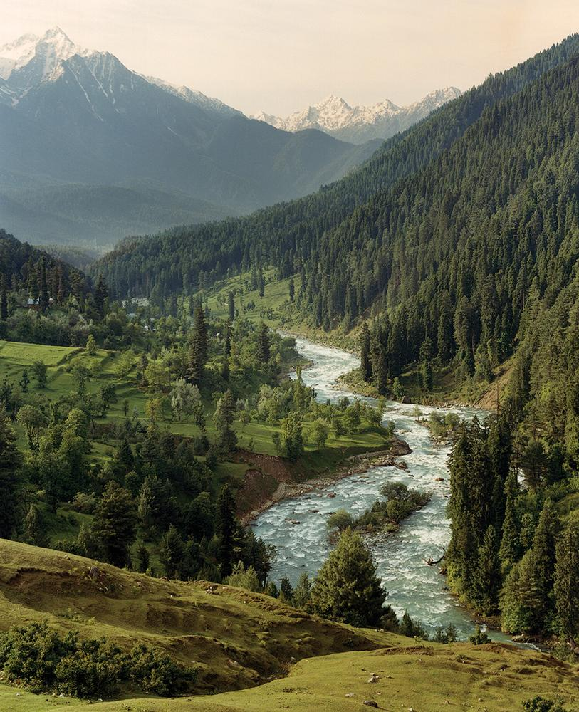
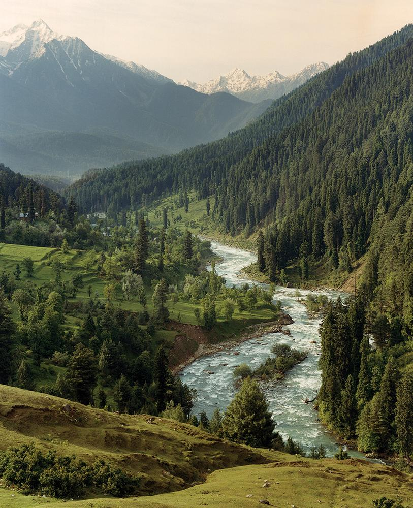
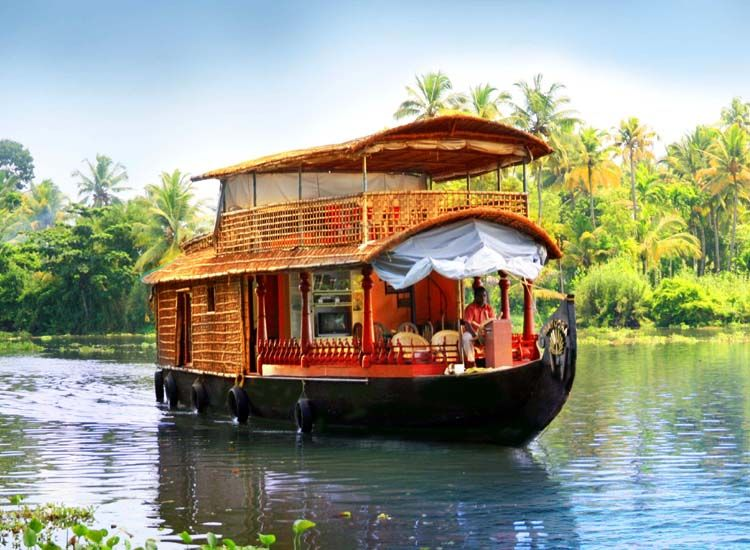

Food Blogging

A food blogger is someone who reviews their food experience with a particular cafe or restaurant. He/she might even have expertise in cooking food. Some food bloggers even share their food recipes on different social media channels with their followers. It's about exploring food everywhere, be it cafes, restaurants, or even street food.
Travel BLogging
Travel blogging is sharing your travel experiences. Be it about a road trip, cultural practices or local food customs. You just write what you felt on a trip. Just one request, please don't make it sound like a travel brochure.
Fashion Blogging
Fashion blogs are blogs that cover the fashion industry, clothing, and personal style. A fashion blog can cover many things such as specific items of clothing and accessories, trends in various apparel markets, celebrity fashion choices and street fashion trends. They cover fashion at all levels from the biggest names to the smallest indie designers. Many fashion blogs could also be categorised as shopping blogs, since "most of the conversation is shopping advice, liberally laced with consumer recommendations". This is very similar to the content of fashion magazines. Some retailers in the fashion industry have even started blogs of their own to promote their products.
Community
Bloggers
Popular Post
 

Follow Us
https://www.instagram.com/blogger/
https://www.twitter.com/blogger/